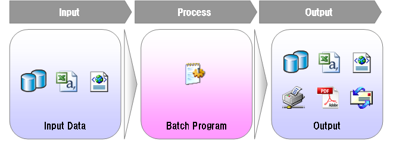

機能リファレンス
bathoryで使われている機能の説明をします。
プロジェクト構成
bathoryでは、ルートパッケージの配下にcollector,consumerなどのパッケージを作って、 そこに必要なファイルを格納します。 ルートパッケージ名は、任意の名前を指定することができます。 例えば、bathory-examplesプロジェクトでは、ルートパッケージ名は、examples.bathoryになっています。
ルートパッケージ名は、convention.diconで指定します。 bathory-examplesプロジェクトでは、src/main/resourcesで次のように指定されています。
<?xml version="1.0" encoding="UTF-8"?> <!DOCTYPE components PUBLIC "-//SEASAR//DTD S2Container 2.4//EN" "http://www.seasar.org/dtd/components24.dtd"> <components> <component class="org.seasar.framework.convention.impl.NamingConventionImpl"> <initMethod name="addRootPackageName"> <arg>"examples.bathory"</arg> </initMethod> </component> </components>
このルートパッケージ以下に、ControllerやConsumerを作成します。
アプリケーションアーキテクチャ
bathoryは、Producer-Consumerパターンに基づいたアーキテクチャを採用しています。 bathory中では、Producerに当たる部分をCollector、Consumerにあたる部分をConsumer、CollectorとConsumerのデータ受け渡しはCasketと呼んでいます。 以下にbathoryのアプリケーションアーキテクチャを説明します。
一般的なバッチアプリケーションは、以下のような構造になります。
- データベースやファイル（CSV/XML）ファイルを入力情報として取得
- 入力情報に対し、業務処理を実行
- データベースやファイル（CSV/XML）メールや帳票に対して処理結果を出力
bathoryでは、このようなバッチアプリケーション構築時の雛形を提供します。
このうち、入力に関する処理をCollectorに記述し、業務処理・出力に関する処理をConsumerに記述します。 データは直接受け渡しせず、Casketという入れ物クラス経由で受け渡しを行います。 bathoryでは、このCollectorとConsumerを作成することでバッチアプリケーションを構築していきます。
Collector
バッチアプリケーションの中で、データ収集を司るクラスをCollectorといいます。 Collectorの役割は、データベースやファイルを読み込み、Casketというクラスへデータを引き渡すことです。
Collectorクラスは、以下のような規約でクラス名を付与します。
| 規約 | 説明 | |
| 1 | パッケージ名 | ルートパッケージ名.collector ルートパッケージ名の詳細はこちらを参照してください。 |
| 2 | クラス名 |
|
| 3 | 実装すべきインタフェース | org.seasar.bathory.engine.Collector 必要に応じて、org.seasar.bathory.engine.BatchLifecycleListener BatchLifecycleListenerの詳細はこちらを参照してください。 |
S2DaoやS2JDBCでの検索結果が収集データとして利用可能な場合、収集処理を容易に記述するためのユーティリティクラスを用意しています。
| 収集元 | 使用する機能 | クラス | |
| 1 | S2Dao | FetchHandler | org.seasar.bathory.extentions.s2dao.FetchHandlerAdapter |
| 2 | S2JDBC | IterationCallback | org.seasar.bathory.extentions.s2jdbc.IterationCallbackAdapter |
CSVファイルやXMLファイルに関してのユーティリティクラスは今後拡充予定です。
Consumer
バッチアプリケーションの中で、業務処理や出力処理を司るクラスをConsumerといいます。 Consumerの役割は、Collectorが収集した一件分のデータに対して業務処理・出力処理を行います。
Consumerクラスは、以下のような規約でクラス名を付与します。
| 規約 | 説明 | |
| 1 | パッケージ名 | ルートパッケージ名.consumer ルートパッケージ名の詳細はこちらを参照してください。 |
| 2 | クラス名 | 対応するCollectorのクラス名のCollectorをConsumerに変更します。 |
| 3 | 実装すべきインタフェース | org.seasar.bathory.engine.Consumer 必要に応じて、org.seasar.bathory.engine.BatchLifecycleListener BatchLifecycleListenerの詳細はこちらを参照してください。 |
業務処理が長くなるようであれば、ServiceクラスやLogicクラスに切り出してください。 Teedaのページクラスのようなクラスだと理解してくれるとわかりやすいと思います。
初期化・終了処理
バッチアプリケーションを構築する際、ファイルのオープン・クローズなど、処理開始・終了時に一回のみ行いたい処理がある場合があります。 その場合は、CollectorもしくはConsumerにBatchLifecycleListenerを実装してください。
public class TestConsumer implements Consumer, BatchLifecycleListener {
/** Writerを格納するキー名. */
private static final String WRITER = "Writer";
@Override
public void initilize() {
BathoryContext context = BathoryContext.getCurrentInstance();
try {
Writer writer = new BufferedWriter(new FileWriter("/path/to/file.csv"));
} catch (IOException e) {
throw new SystemException(e);
}
context.getProperties().put(STRING_WRITER, writer);
}
@Override
public void consume() {
// BathoryContextの取得
BathoryContext context = BathoryContext.getCurrentInstance();
Writer writer = (Writer) context.getProperties().get(WRITER);
// writerへの書き込み処理
}
@Override
public void terminate() {
// BathoryContextの取得
BathoryContext context = BathoryContext.getCurrentInstance();
Writer writer = (Writer) context.getProperties().get(WRITER);
// writerのclose
try {
writer.flush();
writer.close();
} catch (IOException e) {
throw new SystemException(e);
}
}
}
初期化・終了処理は、Collector,Consumerそれぞれに記述可能です。 特に大きな理由がないのであれば、以下のようなルールで記述することをお勧めします。 ファイルへのアクセスがデータ取得時なら、Collectorに、データ処理時ならConsumerに記述すると読みやすいと思います。
Casket
データの受け渡しを行うためのクラスです。 Collectorにて取得したデータを受け取り、Consumerへ引渡しをします。
バッチは大規模なデータを扱うことが多いため、大量にメモリを消費してしまう可能性があります。 そのため、Casketでは、一定件数以上のデータがメモリ上に展開されないようになっています。 Casketのデータ保持件数のデフォルト値と変更方法についてはバッチアプリケーション設定情報を参照。
終了コード
終了コードとは、バッチアプリケーションが終了した際、バッチ実行の結果を呼び出した元へ伝達するためのコードのことです。 通常、バッチアプリケーションは、ジョブスケジューラから呼び出されます。 ジョブスケジューラでは、この終了コードを参照して、処理の継続・中断・条件分岐などを決定します。
bathoryは、発生した例外に応じて終了コードを決定します。例外と終了コードの関係は以下のとおりです。
| 例外 | 説明 | 処理継続 | 終了コード | |
| 1 | org.seasar.bathory.exception.RecoverableException | 回復可能であることを表す例外。 | 処理継続 | 警告 |
| 2 | org.seasar.bathory.exception.ExitException | 終了ステータスコードを指定して終了したい際に使用する例外。 | 即時終了 | 任意の終了コード |
| 3 | その他の例外 | 即時終了 | エラー | |
| 4 | 例外が未発生 | 正常 |
終了コードのデフォルト値と変更方法についてはバッチアプリケーション設定情報を参照。
トランザクション
バッチアプリケーションでは、オンラインアプリケーションとは違った、バッチアプリケーション特有のトランザクション概念が存在します。
bathoryでは、以下のようなトランザクション機能をサポートします。
- セーブポイント
- コミットポイント
- リトライ
- リラン
セーブポイント
セーブポイントとは、トランザクションをより細かく管理するための仕組みです。 セーブポイントを使うと、０か１かではなく、中間的なものを定義できる 作業単位でトランザクション探知を確保可能 かつ、何かが起きたときに全体ロールバック可能
バッチはレコード指向のだよ その単位で個別なトランザクション（セーブポイント）をかけるよ
コミットポイント
コミットポイントとは、一定処理件数毎にコミットをかける機能です。
大量件数を処理バッチアプリケーションでは、途中でコミットする必要がある場合があります。 たとえば、大量件のテーブルを一回のトランザクションで処理した場合、長時間ロックがかかり続けます。 そのような場合、処理時間をかんがみた上で一定件数毎にコミットを行い、ロックの時間を抑えます。
コミットポイントに正数を与えた場合、その件数毎にコミットを行います。 コミットポイントに0以下の数を指定すると、途中でコミットは行わず、オンラインアプリケーションのようなトランザクションになります。 起動オプションの指定方法については起動オプションを参照。
コミットポイントのデフォルト値と変更方法についてはバッチアプリケーション設定情報を参照。
リトライ
リトライとは、
TBD
リラン
リランとは、
ただ、リラン機能に関してはまだ未実装です
TBD
バッチアプリケーション設定情報
bathoryでは、アプリケーション全体に関する設定を、設定ファイルにて変更することが可能です。
以下に、設定可能な項目の一覧及び規定値、変更方法を説明します。
アプリケーション規定値
bathroyでは、以下の用な設定項目があり、規定値では以下のように設定しています。
| キー名 | 説明 | 値 | |
| 1 | successCode | バッチが正常に終了した際の終了コード | 0 |
| 2 | warnCode | 回復可能な例外（セーブポイントまでのロールバック）が一回以上発生した際の終了コード | 1 |
| 3 | errorCode | 回復可能な例外が発生した際の終了コード | 10 |
| 4 | rollbackBorder | トランザクションの全体をロールバックする終了コード値 | 10 |
| 5 | queueSize | Casketに保持するキューの大きさ | 100 |
| 6 | defaultParallelism | 並列度を指定しなかった際に選択される並列度 | 1 |
| 7 | defaultRetryCount | リトライ回数を指定しなかった際に選択されるリトライ回数 | 1 |
| 8 | defaultCommitCount | コミット回数を指定しなかった際に選択されるコミット回数。0を指定すると途中でコミットを発行せず、ひとつのトランザクションとして動作します | 0 |
アプリケーション設定値変更方法
クラスパスが通っているディレクトリへBATSetting.propetiesというファイルを用意してください。 そして、設定値を変更したい項目を定義してください。
以下は、終了コードの値を変更しています。
warnCode=5 errorCode=99
BATSetting.propeties
並列処理
TBD
メッセージリソース管理
TBD
統計情報
TBD
Context情報
TBD
ログ
TBD
起動オプション
バッチアプリケーションを起動する際に指定可能な起動オプションは以下のとおり。
| オプション | 日本語名 | 省略可否 | 説明 | 例 | |
| 1 | jobId | ジョブID | 不可 | ジョブスケジューラへジョブとして登録する際のID | job1 |
| 2 | batchId | バッチID | 不可 | バッチアプリケーションのID。通常はこのIDを基にしたCollectorとConsumerを使用します。 | batch1 |
| 3 | parallelism | Consumerの並列度 | 可 | 並列処理参照 | 3 |
| 4 | retryCount | リトライ回数 | 可 | リトライ参照 | 3 |
| 5 | commitCount | コミットカウント | 可 | コミットポイント参照 | 1000000 |
| 6 | identName | バッチ識別子 | 可 | デフォルトでは、jobId + batchId + 現在日時(yyyyMMddhh24mmssSSS)になります。統計情報のキー情報等に使用します。 | |
| 7 | collectorName | Collectorの名称 | 可 | デフォルトの、バッチID+Collector以外のCollectorを指定したい際に使用します。 | testCollector |
| 8 | consumerName | Consumerの名称 | 可 | デフォルトの、バッチID+Consumer以外のConsumerを指定したい際に使用します。 | testConsumer |